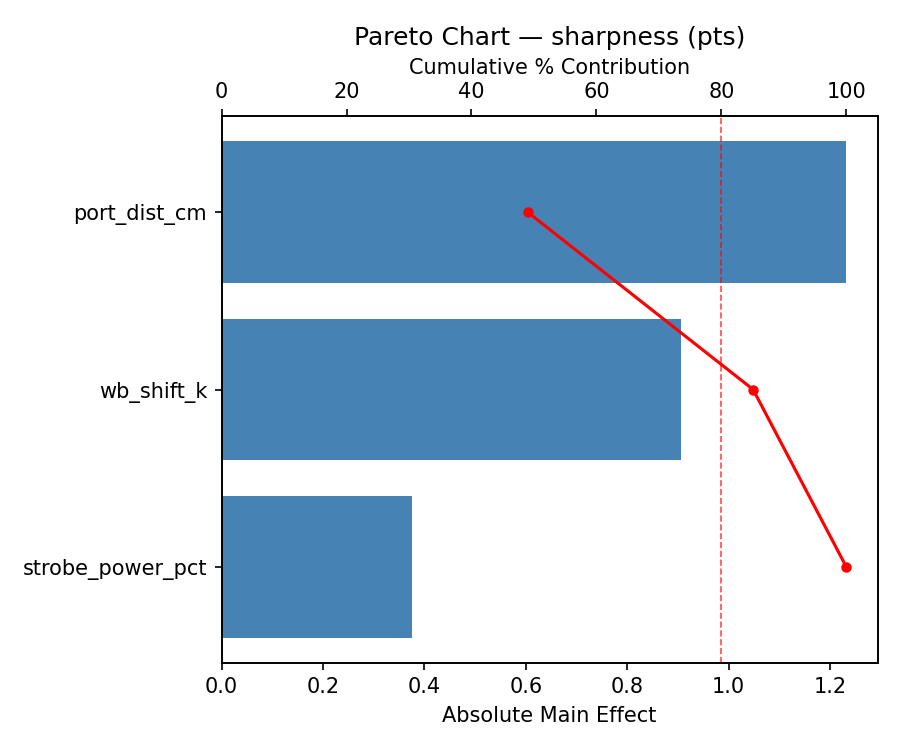
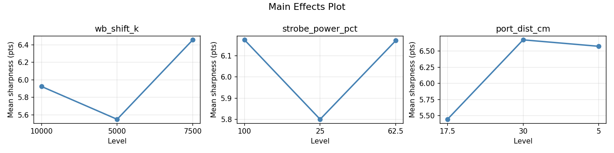
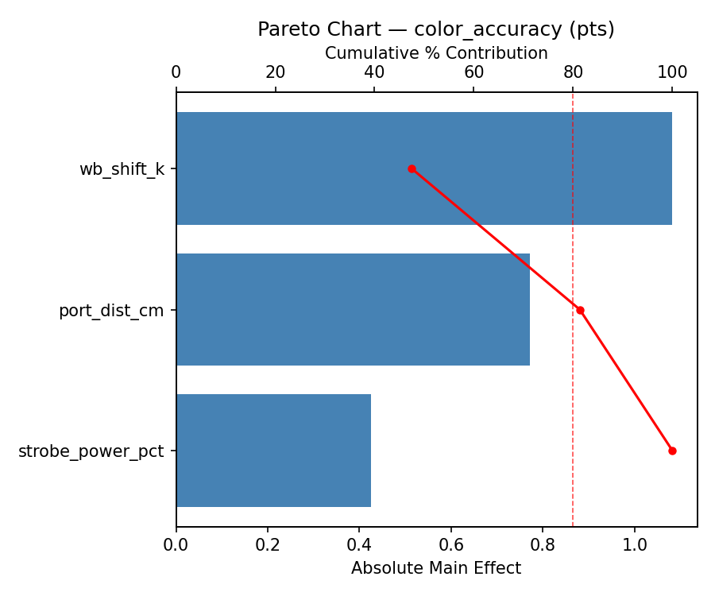
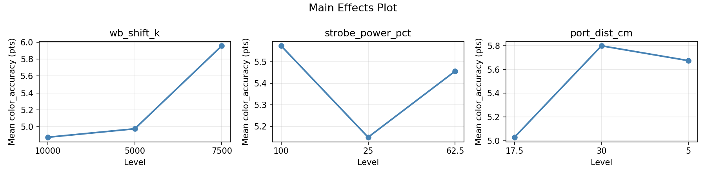
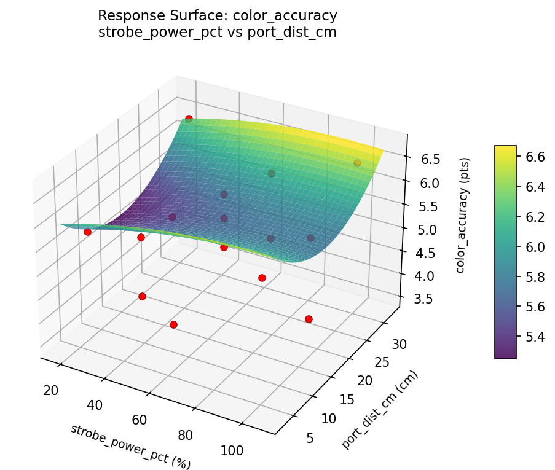
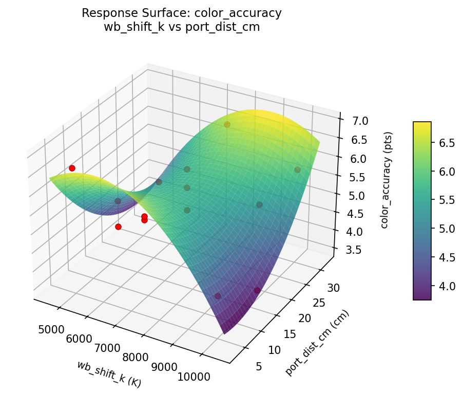
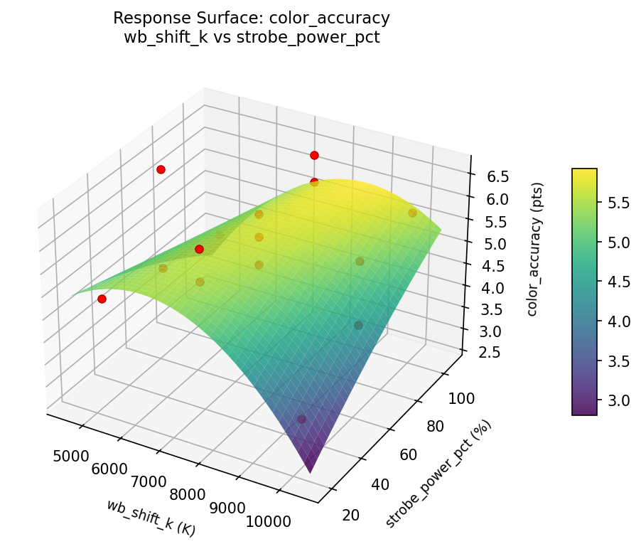
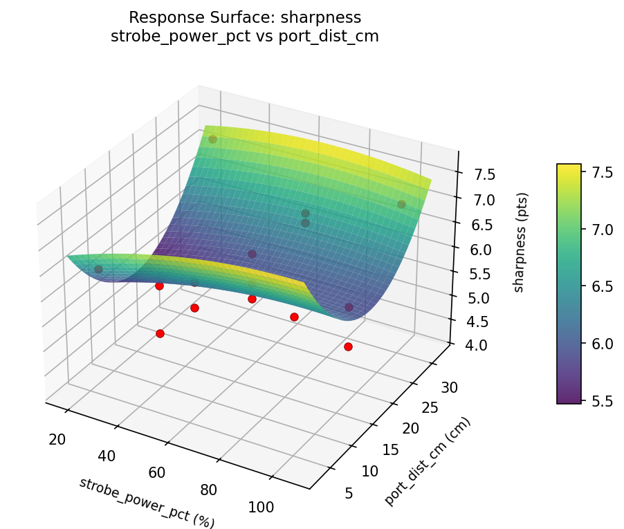
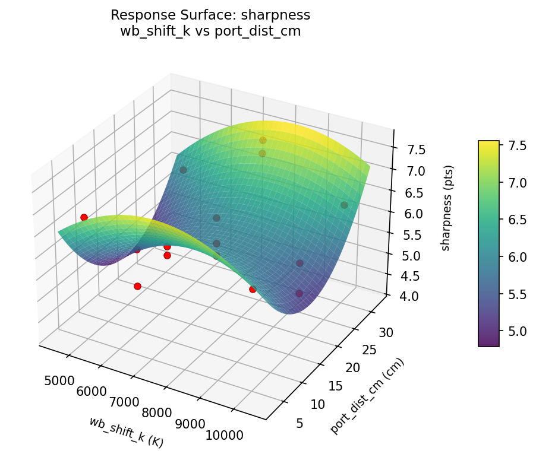
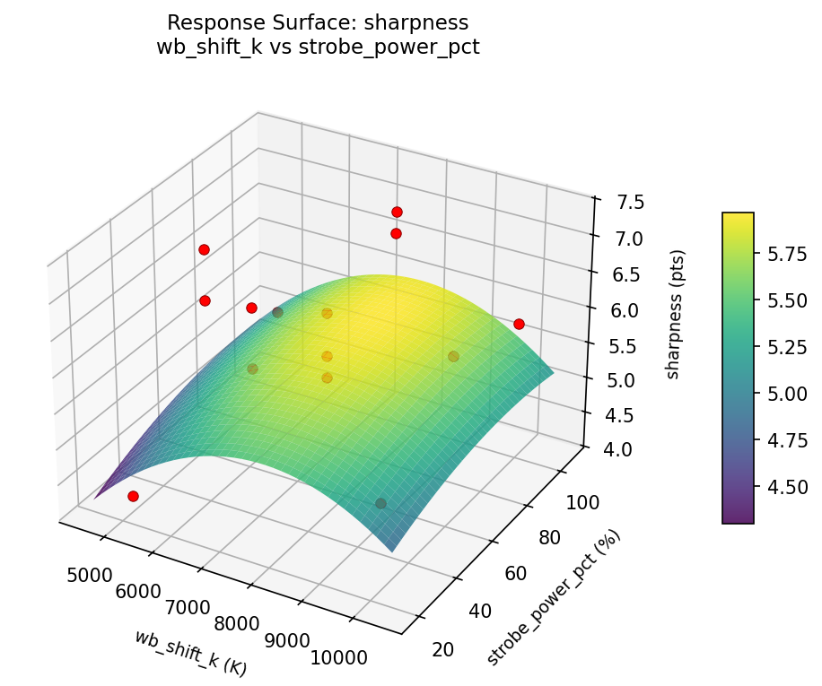

Summary
This experiment investigates underwater camera settings. Box-Behnken design to maximize image sharpness and color accuracy by tuning white balance shift, strobe power, and lens port distance.
The design varies 3 factors: wb shift k (K), ranging from 5000 to 10000, strobe power pct (%), ranging from 25 to 100, and port dist cm (cm), ranging from 5 to 30. The goal is to optimize 2 responses: sharpness (pts) (maximize) and color accuracy (pts) (maximize). Fixed conditions held constant across all runs include depth = 10m, housing = polycarbonate.
A Box-Behnken design was chosen because it efficiently fits quadratic models with 3 continuous factors while avoiding extreme corner combinations — requiring only 15 runs instead of the 8 needed for a full factorial at two levels.
Quadratic response surface models were fitted to capture potential curvature and factor interactions. The RSM contour plots below visualize how pairs of factors jointly affect each response.
Key Findings
For sharpness, the most influential factors were strobe power pct (42.6%), wb shift k (36.1%), port dist cm (21.3%). The best observed value was 7.3 (at wb shift k = 7500, strobe power pct = 100, port dist cm = 5).
For color accuracy, the most influential factors were port dist cm (52.3%), strobe power pct (32.4%), wb shift k (15.2%). The best observed value was 6.6 (at wb shift k = 7500, strobe power pct = 62.5, port dist cm = 17.5).
Recommended Next Steps
- Run confirmation experiments at the predicted optimal settings to validate the model.
- Consider whether any fixed factors should be varied in a future study.
Experimental Setup
Factors
| Factor | Low | High | Unit |
|---|
wb_shift_k | 5000 | 10000 | K |
strobe_power_pct | 25 | 100 | % |
port_dist_cm | 5 | 30 | cm |
Fixed: depth = 10m, housing = polycarbonate
Responses
| Response | Direction | Unit |
|---|
sharpness | ↑ maximize | pts |
color_accuracy | ↑ maximize | pts |
Configuration
{
"metadata": {
"name": "Underwater Camera Settings",
"description": "Box-Behnken design to maximize image sharpness and color accuracy by tuning white balance shift, strobe power, and lens port distance"
},
"factors": [
{
"name": "wb_shift_k",
"levels": [
"5000",
"10000"
],
"type": "continuous",
"unit": "K"
},
{
"name": "strobe_power_pct",
"levels": [
"25",
"100"
],
"type": "continuous",
"unit": "%"
},
{
"name": "port_dist_cm",
"levels": [
"5",
"30"
],
"type": "continuous",
"unit": "cm"
}
],
"fixed_factors": {
"depth": "10m",
"housing": "polycarbonate"
},
"responses": [
{
"name": "sharpness",
"optimize": "maximize",
"unit": "pts"
},
{
"name": "color_accuracy",
"optimize": "maximize",
"unit": "pts"
}
],
"settings": {
"operation": "box_behnken",
"test_script": "use_cases/259_underwater_camera/sim.sh"
}
}
Experimental Matrix
The Box-Behnken Design produces 15 runs. Each row is one experiment with specific factor settings.
| Run | wb_shift_k | strobe_power_pct | port_dist_cm |
|---|
| 1 | 7500 | 25 | 5 |
| 2 | 7500 | 62.5 | 17.5 |
| 3 | 10000 | 62.5 | 30 |
| 4 | 10000 | 62.5 | 5 |
| 5 | 7500 | 62.5 | 17.5 |
| 6 | 7500 | 62.5 | 17.5 |
| 7 | 5000 | 62.5 | 30 |
| 8 | 10000 | 25 | 17.5 |
| 9 | 7500 | 25 | 30 |
| 10 | 10000 | 100 | 17.5 |
| 11 | 5000 | 62.5 | 5 |
| 12 | 7500 | 100 | 30 |
| 13 | 5000 | 25 | 17.5 |
| 14 | 5000 | 100 | 17.5 |
| 15 | 7500 | 100 | 5 |
Step-by-Step Workflow
1
Preview the design
$ python doe.py info --config use_cases/259_underwater_camera/config.json
2
Generate the runner script
$ python doe.py generate --config use_cases/259_underwater_camera/config.json \
--output use_cases/259_underwater_camera/results/run.sh --seed 42
3
Execute the experiments
$ bash use_cases/259_underwater_camera/results/run.sh
4
Analyze results
$ python doe.py analyze --config use_cases/259_underwater_camera/config.json
5
Get optimization recommendations
$ python doe.py optimize --config use_cases/259_underwater_camera/config.json
6
Multi-objective optimization
With 2 competing responses, use --multi to find the best compromise via Derringer–Suich desirability.
$ python doe.py optimize --config use_cases/259_underwater_camera/config.json --multi
7
Generate the HTML report
$ python doe.py report --config use_cases/259_underwater_camera/config.json \
--output use_cases/259_underwater_camera/results/report.html
Features Exercised
| Feature | Value |
|---|
| Design type | box_behnken |
| Factor types | continuous (all 3) |
| Arg style | double-dash |
| Responses | 2 (sharpness ↑, color_accuracy ↑) |
| Total runs | 15 |
Analysis Results
Generated from actual experiment runs using the DOE Helper Tool.
Response: sharpness
Top factors: strobe_power_pct (42.6%), wb_shift_k (36.1%), port_dist_cm (21.3%).
Pareto Chart

Main Effects Plot

Response: color_accuracy
Top factors: port_dist_cm (52.3%), strobe_power_pct (32.4%), wb_shift_k (15.2%).
Pareto Chart

Main Effects Plot

Response Surface Plots
3D surfaces fitted with quadratic RSM. Red dots are observed data points.
color accuracy strobe power pct vs port dist cm

color accuracy wb shift k vs port dist cm

color accuracy wb shift k vs strobe power pct

sharpness strobe power pct vs port dist cm

sharpness wb shift k vs port dist cm

sharpness wb shift k vs strobe power pct

Multi-Objective Optimization
When responses compete, Derringer–Suich desirability finds the best compromise.
Each response is scaled to a 0–1 desirability, then combined via a weighted geometric mean.
Overall Desirability
D = 0.9398
Per-Response Desirability
| Response | Weight | Desirability | Predicted | Dir |
|---|
sharpness |
1.5 |
|
7.30 0.9545 7.30 pts |
↑ |
color_accuracy |
1.5 |
|
6.50 0.9252 6.50 pts |
↑ |
Recommended Settings
| Factor | Value |
|---|
wb_shift_k | 7500 K |
strobe_power_pct | 100 % |
port_dist_cm | 30 cm |
Source: from observed run #10
Trade-off Summary
Sacrifice = how much worse than single-objective best.
| Response | Predicted | Best Observed | Sacrifice |
|---|
color_accuracy | 6.50 | 6.60 | +0.10 |
Top 3 Runs by Desirability
| Run | D | Factor Settings |
|---|
| #15 | 0.8954 | wb_shift_k=5000, strobe_power_pct=100, port_dist_cm=17.5 |
| #4 | 0.8782 | wb_shift_k=7500, strobe_power_pct=25, port_dist_cm=30 |
Model Quality
| Response | R² | Type |
|---|
color_accuracy | 0.0826 | linear |
Full Multi-Objective Output
============================================================
MULTI-OBJECTIVE OPTIMIZATION
Method: Derringer-Suich Desirability Function
============================================================
Overall desirability: D = 0.9398
Response Weight Desirability Predicted Direction
---------------------------------------------------------------------
sharpness 1.5 0.9545 7.30 pts ↑
color_accuracy 1.5 0.9252 6.50 pts ↑
Recommended settings:
wb_shift_k = 7500 K
strobe_power_pct = 100 %
port_dist_cm = 30 cm
(from observed run #10)
Trade-off summary:
sharpness: 7.30 (best observed: 7.30, sacrifice: +0.00)
color_accuracy: 6.50 (best observed: 6.60, sacrifice: +0.10)
Model quality:
sharpness: R² = 0.4151 (linear)
color_accuracy: R² = 0.0826 (linear)
Top 3 observed runs by overall desirability:
1. Run #10 (D=0.9398): wb_shift_k=7500, strobe_power_pct=100, port_dist_cm=30
2. Run #15 (D=0.8954): wb_shift_k=5000, strobe_power_pct=100, port_dist_cm=17.5
3. Run #4 (D=0.8782): wb_shift_k=7500, strobe_power_pct=25, port_dist_cm=30
Full Analysis Output
=== Main Effects: sharpness ===
Factor Effect Std Error % Contribution
--------------------------------------------------------------
strobe_power_pct 0.5786 0.2108 42.6%
wb_shift_k 0.4893 0.2108 36.1%
port_dist_cm 0.2893 0.2108 21.3%
=== ANOVA Table: sharpness ===
Source DF SS MS F p-value
-----------------------------------------------------------------------------
wb_shift_k 2 0.6658 0.3329 0.640 0.5522
strobe_power_pct 2 0.8550 0.4275 0.822 0.4734
port_dist_cm 2 0.2258 0.1129 0.217 0.8095
Lack of Fit 6 6.5428 1.0905 2.097 0.3576
Pure Error 2 1.0400 0.5200
Error 8 7.5828 0.5200
Total 14 9.3293 0.6664
=== Summary Statistics: sharpness ===
wb_shift_k:
Level N Mean Std Min Max
------------------------------------------------------------
10000 4 5.7250 1.2764 4.2000 7.3000
5000 4 6.1750 0.8261 5.2000 7.0000
7500 7 6.2143 0.5367 5.1000 6.8000
strobe_power_pct:
Level N Mean Std Min Max
------------------------------------------------------------
100 4 6.4500 0.6245 5.8000 7.3000
25 4 6.0500 0.6758 5.2000 6.8000
62.5 7 5.8714 0.9945 4.2000 7.0000
port_dist_cm:
Level N Mean Std Min Max
------------------------------------------------------------
17.5 7 5.9857 0.7581 5.1000 7.3000
30 4 6.0250 1.2285 4.2000 6.8000
5 4 6.2750 0.6131 5.5000 7.0000
=== Main Effects: color_accuracy ===
Factor Effect Std Error % Contribution
--------------------------------------------------------------
port_dist_cm 0.7607 0.2495 52.3%
strobe_power_pct 0.4714 0.2495 32.4%
wb_shift_k 0.2214 0.2495 15.2%
=== ANOVA Table: color_accuracy ===
Source DF SS MS F p-value
-----------------------------------------------------------------------------
wb_shift_k 2 0.1250 0.0625 0.076 0.9275
strobe_power_pct 2 0.5675 0.2838 0.345 0.7185
port_dist_cm 2 1.4833 0.7416 0.901 0.4438
Lack of Fit 6 9.2468 1.5411 1.872 0.3884
Pure Error 2 1.6467 0.8233
Error 8 10.8935 0.8233
Total 14 13.0693 0.9335
=== Summary Statistics: color_accuracy ===
wb_shift_k:
Level N Mean Std Min Max
------------------------------------------------------------
10000 4 5.5500 0.7594 4.8000 6.5000
5000 4 5.4000 1.3115 3.5000 6.5000
7500 7 5.3286 1.0045 4.1000 6.6000
strobe_power_pct:
Level N Mean Std Min Max
------------------------------------------------------------
100 4 5.7000 0.9274 4.4000 6.5000
25 4 5.4250 1.3376 3.5000 6.6000
62.5 7 5.2286 0.8712 4.1000 6.5000
port_dist_cm:
Level N Mean Std Min Max
------------------------------------------------------------
17.5 7 5.1143 1.1067 3.5000 6.5000
30 4 5.8750 0.7719 4.8000 6.6000
5 4 5.4500 0.9037 4.4000 6.5000
Optimization Recommendations
=== Optimization: sharpness ===
Direction: maximize
Best observed run: #10
wb_shift_k = 7500
strobe_power_pct = 100
port_dist_cm = 5
Value: 7.3
RSM Model (linear, R² = 0.2543, Adj R² = 0.0509):
Coefficients:
intercept +6.0733
wb_shift_k +0.1375
strobe_power_pct +0.4875
port_dist_cm -0.2000
RSM Model (quadratic, R² = 0.5174, Adj R² = -0.3513):
Coefficients:
intercept +6.0000
wb_shift_k +0.1375
strobe_power_pct +0.4875
port_dist_cm -0.2000
wb_shift_k*strobe_power_pct +0.4250
wb_shift_k*port_dist_cm +0.1000
strobe_power_pct*port_dist_cm +0.1500
wb_shift_k^2 +0.2375
strobe_power_pct^2 -0.4625
port_dist_cm^2 +0.3625
Curvature analysis:
strobe_power_pct coef=-0.4625 concave (has a maximum)
port_dist_cm coef=+0.3625 convex (has a minimum)
wb_shift_k coef=+0.2375 convex (has a minimum)
Notable interactions:
wb_shift_k*strobe_power_pct coef=+0.4250 (synergistic)
Predicted optimum (from linear model, at observed points):
wb_shift_k = 7500
strobe_power_pct = 100
port_dist_cm = 5
Predicted value: 6.7608
Surface optimum (via L-BFGS-B, linear model):
wb_shift_k = 10000
strobe_power_pct = 100
port_dist_cm = 5
Predicted value: 6.8983
Model quality: Weak fit — consider adding center points or using a different design.
Factor importance:
1. strobe_power_pct (effect: 1.0, contribution: 50.8%)
2. port_dist_cm (effect: 0.6, contribution: 29.6%)
3. wb_shift_k (effect: 0.4, contribution: 19.6%)
=== Optimization: color_accuracy ===
Direction: maximize
Best observed run: #4
wb_shift_k = 7500
strobe_power_pct = 62.5
port_dist_cm = 17.5
Value: 6.6
RSM Model (linear, R² = 0.1094, Adj R² = -0.1335):
Coefficients:
intercept +5.4067
wb_shift_k +0.2250
strobe_power_pct -0.1500
port_dist_cm -0.3250
RSM Model (quadratic, R² = 0.5473, Adj R² = -0.2676):
Coefficients:
intercept +5.0333
wb_shift_k +0.2250
strobe_power_pct -0.1500
port_dist_cm -0.3250
wb_shift_k*strobe_power_pct +0.7500
wb_shift_k*port_dist_cm +0.2500
strobe_power_pct*port_dist_cm -0.3000
wb_shift_k^2 +0.3833
strobe_power_pct^2 -0.3667
port_dist_cm^2 +0.6833
Curvature analysis:
port_dist_cm coef=+0.6833 convex (has a minimum)
wb_shift_k coef=+0.3833 convex (has a minimum)
strobe_power_pct coef=-0.3667 concave (has a maximum)
Notable interactions:
wb_shift_k*strobe_power_pct coef=+0.7500 (synergistic)
Predicted optimum (from linear model, at observed points):
wb_shift_k = 10000
strobe_power_pct = 62.5
port_dist_cm = 5
Predicted value: 5.9567
Surface optimum (via L-BFGS-B, linear model):
wb_shift_k = 10000
strobe_power_pct = 25
port_dist_cm = 5
Predicted value: 6.1067
Model quality: Weak fit — consider adding center points or using a different design.
Factor importance:
1. port_dist_cm (effect: 1.0, contribution: 46.1%)
2. strobe_power_pct (effect: 0.6, contribution: 27.1%)
3. wb_shift_k (effect: 0.6, contribution: 26.8%)